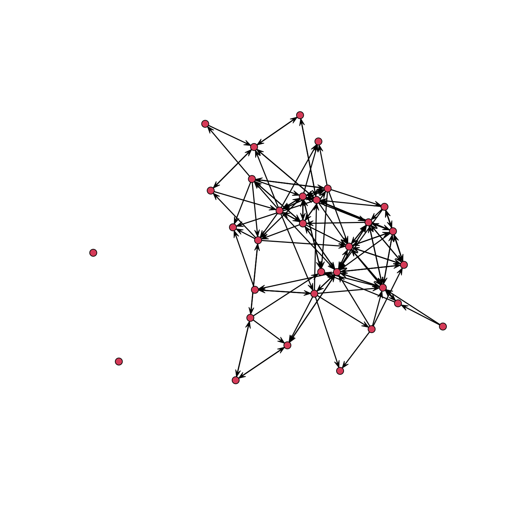
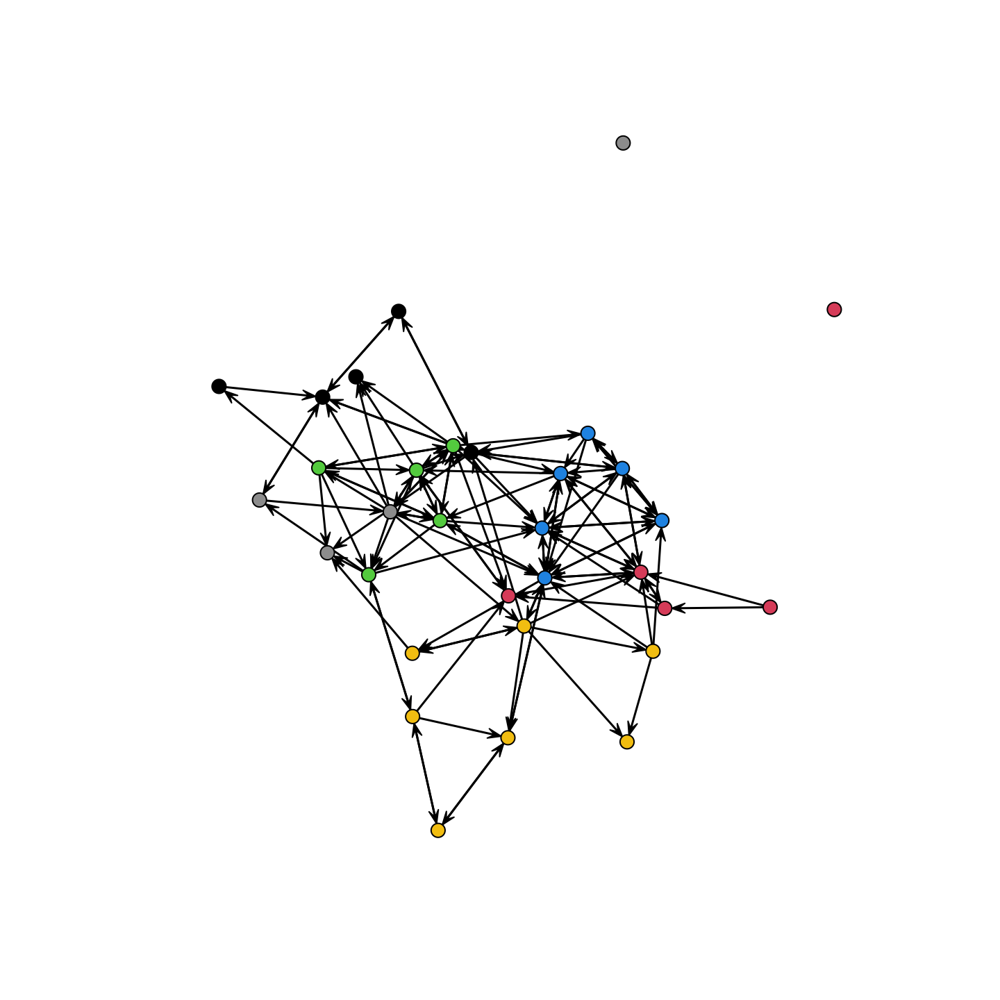

13, Part 1. Cross-Sectional Network Models: ERGM
This tutorial offers an extended example in R demonstrating how to analyze networks using statistical models. We will focus on exponential-family random graph models (ERGMs). ERGMs are useful as they make it possible to uncover what micro tendencies are important in network formation, comparing rates of reciprocity, homophily (for example) net of other network processes. The tutorial will draw on many of the previous tutorials, most directly the tutorials on dyads/triads (Chapter 7) and centrality/hierarchy (Chapter 9). The goals of the tutorial are to get acquainted with: model fitting, interpretation, diagnostics, model comparison, and simulating from a known model. We will offer two main examples, one based on a small school-based network, and one based on a much larger coauthorship network. Both examples are based on cross-sectional network data (so one time point).
13.1 Setting up the Session
We will utilize a small school-based network for the first part of the ERGM tutorial. Our main question is what micro-level processes are important for the formation of the network. In particular, we want to explore some of the processes around gender and grade. For example, do boys tend to have more friends than girls? Is gender homophily a strong driver of tie formation? Is gender homophily stronger than grade homophily? How does controlling for other micro tendencies, like reciprocity and transitive closure, change our conclusions?
First, let's load the necessary packages.
library(ergm)
library(sna)
library(car)Note that the ergm package (Handcock et al. 2023) uses network objects consistent with the network package. It is also useful to have the latticeExtra and Rglpk packages installed.
Now, let's read in our example network data representing a high school friendship network. The network data are saved as an adjacency matrix:
url1 <- "https://github.com/JeffreyAlanSmith/Integrated_Network_Science/raw/master/data/example_schoolmat.csv"
school_mat <- read.csv(file = url1, row.names = 1) We have added row.names = 1 to tell R that the first column should be used to set the row names. Lets turn that data frame into a matrix.
school_mat <- as.matrix(school_mat)And now lets take look at the matrix (just the first five rows and columns). A 1 indicates that person i named person j as a friend.
school_mat[1:5, 1:5] ## id1 id2 id3 id4 id5
## id1 0 0 0 0 0
## id2 0 0 0 0 0
## id3 0 0 0 0 0
## id4 0 0 0 0 0
## id5 0 0 0 0 0Now, we will read in the attribute file, containing nodal characteristics, including gender, grade and ses.
url2 <- "https://github.com/JeffreyAlanSmith/Integrated_Network_Science/raw/master/data/example_schooldata.csv"
school_attributes <- read.csv(file = url2) head(school_attributes)## ids gender grade ses
## 1 1 1 12 7
## 2 2 1 10 7
## 3 3 0 8 10
## 4 4 0 11 9
## 5 5 1 7 10
## 6 6 1 10 9Let's make it easier to interpret the gender variable. Let's recode the 0s and 1s into male and female using a recode() function.
school_attributes$gender_recode <- recode(school_attributes$gender,
as.factor = F,
"0 = 'male'; 1 = 'female'")Let's construct a network object and put the attributes onto the network. First, we need to create a list of attributes based on our attribute data frame.
attribute_list <- do.call(list, school_attributes) Now we create the network based on the matrix and attribute list. We set the network as directed.
school_net <- network(x = school_mat, directed = T,
vertex.attr = attribute_list) school_net## Network attributes:
## vertices = 32
## directed = TRUE
## hyper = FALSE
## loops = FALSE
## multiple = FALSE
## bipartite = FALSE
## total edges= 124
## missing edges= 0
## non-missing edges= 124
##
## Vertex attribute names:
## gender gender_recode grade ids ses vertex.names
##
## No edge attributes13.2 Descriptive Statistics
Before we go ahead and try to fit an exponential random graph model, it will be useful to know a bit about the network in question. Here we will plot the network and calculate basic network statistics.
plot(school_net)
One main question is how gender and grade shape the formation of ties in the network. So, let's look at the network but color the nodes by gender and then by grade. Let's color the nodes by gender, blue for boys and pink for girls:
cols <- recode(school_attributes$gender, as.factor = F,
"0 = 'blue'; 1 = 'pink'")We will now use the cols vector in our plot statement (using the default plot() function in the network package).
plot(school_net, vertex.col = cols) It looks like there is moderate homophily along gender lines. What about grade?
plot(school_net, vertex.col = school_attributes$grade) 
We see pretty clear social divisions by grade. It is also useful to know a bit about indegree and outdegree, seeing which groups (if any) are particularly likely to have high degree. Let's calculate indegree and outdegree for the network:
outdegree <- degree(school_net, cmode = "outdegree")
indegree <- degree(school_net, cmode = "indegree")Let's see if boys or girls have higher degree. We will check this by calculating mean indegree by gender. We can use tapply(), with indegree as the first input, gender as the second, and the function (here mean) as the third.
tapply(indegree, school_attributes$gender_recode, mean) ## female male
## 3.25 4.50Here we calculate the same thing for outdegree.
tapply(outdegree, school_attributes$gender_recode, mean) ## female male
## 3.125 4.625It looks like boys receive and send out more ties than girls.
13.3 CUG Tests
We now turn to some simple statistical tests about the features of the network. This will give us useful information about the network, setting our base expectations before running the full model below. Here we will focus on Conditional Uniform Graph Tests (CUG test). See also Chapter 7.
We begin by calculating the features of interest, like reciprocity or transitivity. We will then compare the observed statistic with the values that one would see in a random network of the same size (and possibly other constraints). As a researcher, you specify the baseline model of interest, specifying how to construct the random network. This sets the comparison of interest, effectively holding certain desired features constant and allowing others to vary randomly. The question is whether the observed statistic is above/below (or similar to) what one would expect by chance. Let's walk through a few examples to get a sense of the features of our network and how this compares to a random network. First, let's calculate density on the network.
gden(school_net) ## [1] 0.125We can see that .125 of all possible ties exist. Now, let's compare the observed density to what we are likely to see in a random network of the same size (i.e., if we took a network of the same size and just started randomly forming ties with probability .5, what would the density look like?). Here, we will run the CUG test with the function of interest set to "gden", calculating density. The conditioning is set to "size", holding size constant at the true network size. Everything else is allowed to vary randomly. We set dat to our network of interest.
cug.test(dat = school_net, FUN = "gden", cmode = "size") ##
## Univariate Conditional Uniform Graph Test
##
## Conditioning Method: size
## Graph Type: digraph
## Diagonal Used: FALSE
## Replications: 1000
##
## Observed Value: 0.125
## Pr(X>=Obs): 1
## Pr(X<=Obs): 0The results clearly show that the density of .125 is well below what we would expect in a random network of size 32 (as the probability of finding simulated values above the observed value is effectively 1). This shouldn't be surprising however, as people have a limited capacity to form ties and the number of possible ties increases non-linearly as size goes up. Density thus tends to decrease non-linearly as system size increases.
Now, let's do something a little more interesting and look at the rate of reciprocity. Reciprocity captures how often i is tied to j when j is tied to i. Here, we will condition the randomly generated networks on density. The question is thus: is the observed rate of reciprocity higher/lower than what we would expect in a network of the same size and number of edges, but where the edges are formed randomly? First, let's calculate reciprocity on the observed network, not including the null dyads in the calculation.
grecip(school_net, measure = "dyadic.nonnull")## Mut
## 0.4090909This says that about .409 of the non-null dyads are reciprocated (where i->j and j->i). And now we will run a CUG test. Here the function of interest is grecip, calculating reciprocity; the argument to the function is measure, set to "dyadic.nonnull". This is passed to grecip via FUN.args. cmode is set to "edges" to condition the random graphs on density.
cug.test(dat = school_net, FUN = "grecip",
FUN.args = list(measure = "dyadic.nonnull"), cmode = "edges") ##
## Univariate Conditional Uniform Graph Test
##
## Conditioning Method: edges
## Graph Type: digraph
## Diagonal Used: FALSE
## Replications: 1000
##
## Observed Value: 0.4090909
## Pr(X>=Obs): 0
## Pr(X<=Obs): 1The results suggest that the reciprocity rate, .409, is above what we would expect in a network of the same size and number of edges but otherwise random ties. We can see this as the probability of finding a randomly generated value higher than the observed value is 0. This would suggest that reciprocity is an important micro process shaping the formation of ties. We can do similar analyses with transitivity (or other statistics), constraining the randomly formed networks to make useful comparisons. For example, it may be useful to ask if the rate of transitivity is higher than what we would expect in a network with the same dyad census, showing if there are triadic effects (if i is friends with j and j is friends with k, is i friends with k?), above what can be induced by dyadic processes (i.e., reciprocity).
13.4 Fitting an ERGM
We have so far learned a bit about our network. We know there is strong grade homophily and weaker gender homophily. We know that boys tend to give and receive more ties than girls. We also know that there are likely norms around reciprocating friendship. We now want to consider these micro-processes together, to see (in a systematic way) how important each factor is in predicting the existence of a tie, net of the other network processes. We saw a very simple version of this above with the CUG test (looking at the rate of reciprocity net of density) but we want to consider a number of factors together. We also want to see how these factors work together to generate the larger features of the network, like distance, thus linking the micro-processes to the emergent, global features of the network.
An exponential random graph model allows us to take the network as the item of interest. The model predicts the presence/absence of a tie between all i-j pairs as a function of different network features, like reciprocity and homophily (on gender for example). It is useful to think of the terms added to the model in terms of dependencies. By including a term for reciprocity (for example), one is claiming that the existence of the i->j tie is dependent on whether or not j->i exists. We can apply similar logic to other terms, where different terms correspond to different arguments about what the formation of the i->j tie is (or is not) dependent on.
Before we actually fit any ERGMs, it will be useful to look at some of the help files for the main functions: ?ergm, ?'ergm-terms', ?mcmc.diagnostics, ?gof.
The function to actually run the model is ergm(). There are a large number of possible arguments to ergm. We focus on the main ones here:
- formula = a formula object with network on the left followed by a ~ and then the set of terms we want to include in the model.
- control = list of options used in the algorithm, like sample size and burnin. The inputs are set via a
control.ergm()function. - constraints = a formula dictating if there should be any constraints on the networks generated in the MCMC sample (used to estimate the parameters). This can be useful when certain networks are impossible (i.e., because the survey constrained the number of friends the respondents could name). For example:
constraints = ~ bd(maxout = 10)would only consider networks where the max outdegree is 10 or less.
13.4.1 Edges Only
We will start simple and run an ERGM with only edges as a predictor. We thus predict the school network as a function of the number of edges in the network and nothing else.
mod_rand <- ergm(formula = school_net ~ edges) Lets take a look at the model results.
summary(mod_rand) ## Call:
## ergm(formula = school_net ~ edges)
##
## Maximum Likelihood Results:
##
## Estimate Std. Error MCMC % z value Pr(>|z|)
## edges -1.946 0.096 0 -20.27 <1e-04 ***
## ---
## Signif. codes: 0 '***' 0.001 '**' 0.01 '*' 0.05 '.' 0.1 ' ' 1
##
## Null Deviance: 1375.2 on 992 degrees of freedom
## Residual Deviance: 747.5 on 991 degrees of freedom
##
## AIC: 749.5 BIC: 754.4 (Smaller is better. MC Std. Err. = 0)The interpretation of the model coefficients is straightforward in this case. The log-odds of any tie existing is -1.946. The probability of any tie existing is: exp(-1.946) / (1 + exp(-1.946)) = .125, which is just the density. Note that if we do a summary on the ergm formula, we get the counts for each network statistic in the observed network.
summary(school_net~edges) ## edges
## 124We see here that there are 124 edges in the observed network.
13.4.2 Edges and Homophily
We know that homophily matters from the plots, so let's add nodematch terms for gender and grade. The nodematch terms count the number of times that an edge exists where i and j have the same attribute (here gender or grade). Note that the ergm package does not currently handle missing data on nodal attributes; the simplest solution to such issues is to impute missing attribute data prior to model estimation.
mod_homoph1 <- ergm(school_net ~ edges + nodematch("gender_recode") +
nodematch("grade")) summary(mod_homoph1)## Call:
## ergm(formula = school_net ~ edges + nodematch("gender_recode") +
## nodematch("grade"))
##
## Maximum Likelihood Results:
##
## Estimate Std. Error MCMC % z value Pr(>|z|)
## edges -2.6140 0.1703 0 -15.351 <1e-04 ***
## nodematch.gender_recode 0.1137 0.2086 0 0.545 0.586
## nodematch.grade 2.3088 0.2144 0 10.769 <1e-04 ***
## ---
## Signif. codes: 0 '***' 0.001 '**' 0.01 '*' 0.05 '.' 0.1 ' ' 1
##
## Null Deviance: 1375.2 on 992 degrees of freedom
## Residual Deviance: 635.7 on 989 degrees of freedom
##
## AIC: 641.7 BIC: 656.4 (Smaller is better. MC Std. Err. = 0)The results suggest that there is strong homophily on grade, well above that expected by chance (conditioned on density and homophily on gender). Grade thus appears to be an important factor in the formation of ties in the network. The nodematch term on gender is not significant, suggesting that the number of edges that match on gender is not clearly above what we would expect in a random network of the same size (conditioned on the other terms in the model, including density).
Let's interpret our grade nodematch coefficient. For a tie between two nodes that match on grade and mismatch on gender the conditional log-odds is: -2.6140 + .1137 * 0 + 2.3088 * 1 = -.3052. The probability of a tie is: exp(-.3052) / (1 + exp(-.3052)) = .424. For a tie between two nodes that mismatch on grade and mismatch on gender the conditional log-odds is: -2.6140 + .1137 * 0 + 2.3088 * 0 = -2.6140. The probability of a tie is: exp(-2.6140) / (1 + exp(-2.6140)) = .068. We can see that the probability of a tie goes down substantially when the two nodes are not in the same grade. In terms of odds ratios, we can say that the odds of a tie existing is exp(2.3088) = 10.062 times higher if the nodes match on grade than if they differ on grade, net of the other terms in the model.
Note that we would want to use an absdiff term if the attribute of interest is continuous and can take on many values, such as with gpa or household income. absdiff takes the absolute difference between the two actors in the dyad on the attribute of interest. The basic idea is that actors who are tied together may have similar values but not match exactly. absdiff is coded in the opposite manner as nodematch, so that a negative coefficient is evidence of homphily.
13.4.3 Edges, Homophily, and Node Covariates
We can ask related questions about gender and grade by adding terms to the model that show if boys (compared to girls) send out and/or receive more ties. We will add nodeifactor terms and nodeofactor terms for gender. nodeifactor captures the ties coming in and nodeofactor captures the ties going out. The terms capture if the mean number of ties coming in or going out is higher for boys than girls. We can add analogous terms for grade using nodeicov and nodeocov. Nodecov terms are appropriate for quantitative variables, rather than factors.
mod_homoph2 <- ergm(school_net ~ edges + nodematch("gender_recode") +
nodematch("grade") +
nodeifactor("gender_recode") +
nodeofactor("gender_recode") +
nodeicov("grade") + nodeocov("grade"))summary(mod_homoph2) ## Call:
## ergm(formula = school_net ~ edges + nodematch("gender_recode") +
## nodematch("grade") + nodeifactor("gender_recode") + nodeofactor("gender_recode") +
## nodeicov("grade") + nodeocov("grade"))
##
## Maximum Likelihood Results:
##
## Estimate Std. Error MCMC % z value Pr(>|z|)
## edges -7.54896 0.82637 0 -9.135 <1e-04 ***
## nodematch.gender_recode 0.03797 0.22294 0 0.170 0.8648
## nodematch.grade 2.49128 0.23497 0 10.603 <1e-04 ***
## nodeifactor.gender_recode.male 0.45209 0.22428 0 2.016 0.0438 *
## nodeofactor.gender_recode.male 0.55980 0.22467 0 2.492 0.0127 *
## nodeicov.grade 0.26617 0.06388 0 4.167 <1e-04 ***
## nodeocov.grade 0.18685 0.06275 0 2.978 0.0029 **
## ---
## Signif. codes: 0 '***' 0.001 '**' 0.01 '*' 0.05 '.' 0.1 ' ' 1
##
## Null Deviance: 1375.2 on 992 degrees of freedom
## Residual Deviance: 586.6 on 985 degrees of freedom
##
## AIC: 600.6 BIC: 634.9 (Smaller is better. MC Std. Err. = 0)It looks like individuals who are male are more likely to send and receive friendship nominations, net of the other terms in the model. The results also suggest that individuals in higher grades tend to receive and send more ties while forming strong boundaries around grade (looking at the nodematch term on grade).
13.4.4 Edges, Homophily, Node Covariates, and Reciprocity
Now, let's go ahead and make a more complicated model, one that incorporates reciprocity. We will do this by adding a mutual term to the model. The mutual term counts the number of pairs where i->j and j->i exist. Note that by adding mutual to the model the model will now be fit using MCMC methods. With MCMC estimation, it is often useful to set the input parameters to the estimation routine. This can be done using control.ergm(). Let's see how to do this. Here we will set the sample size using a MCMC.samplesize argument and burnin using a MCMC.burnin argument.
set.seed(1012)
mod_homoph_mutual1 <- ergm(school_net ~ edges +
nodematch("gender_recode") +
nodematch("grade") +
nodeifactor("gender_recode") +
nodeofactor("gender_recode") +
nodeicov("grade") + nodeocov("grade") +
mutual,
control = control.ergm(MCMC.burnin = 50000,
MCMC.samplesize = 6000)) Note that in the R console there we will be added output telling you what the algorithm is doing, although we suppress this here.
13.5 Checking Model Convergence
Our model is now being estimated via MCMC methods. It is important to make sure that the algorithm converged, so that the sampled networks (which the estimates are based on) offer reasonable, consistent statistics (or counts) sample to sample. Let's see how the model looks using a mcmc.diagnostics() function:
mcmc.diagnostics(mod_homoph_mutual1, vars.per.page = 4)The function plots the MCMC sample of network statistics for each term included in the model. The plots show how far the statistics calculated on the sampled networks are from the true value, calculated on the observed network. The plots on the left hand show the statistics taken from each individual sample (plotted in order), while the right hand side shows the distribution of sample statistics. A 'nice' looking plot would have the sample statistics centered around 0, with some (but not extreme) variance sample to sample, suggesting that the specified model is well-behaved and can produce networks consistent with the observed data.
In this case everything looks okay and the model seems to have converged. The networks statistics haven't gone off dramatically in one direction and are not erratic, changing dramatically sample to sample (but there is still variation). We will consider examples later on where the models do not converge. Note that if we had found problems one possible option is to tweak the input parameters further, generally allowing for a longer burnin, more iterations between samples and so on. Let's go ahead and look at the results:
summary(mod_homoph_mutual1)## Call:
## ergm(formula = school_net ~ edges + nodematch("gender_recode") +
## nodematch("grade") + nodeifactor("gender_recode") + nodeofactor("gender_recode") +
## nodeicov("grade") + nodeocov("grade") + mutual, control = control.ergm(MCMC.burnin = 50000,
## MCMC.samplesize = 6000))
##
## Monte Carlo Maximum Likelihood Results:
##
## Estimate Std. Error MCMC % z value Pr(>|z|)
## edges -6.48488 0.71672 0 -9.048 < 1e-04 ***
## nodematch.gender_recode 0.02139 0.18794 0 0.114 0.90938
## nodematch.grade 1.74426 0.21750 0 8.020 < 1e-04 ***
## nodeifactor.gender_recode.male 0.29171 0.23868 0 1.222 0.22164
## nodeofactor.gender_recode.male 0.45784 0.23841 0 1.920 0.05481 .
## nodeicov.grade 0.21605 0.06836 0 3.161 0.00157 **
## nodeocov.grade 0.10241 0.06877 0 1.489 0.13643
## mutual 2.35476 0.36848 0 6.390 < 1e-04 ***
## ---
## Signif. codes: 0 '***' 0.001 '**' 0.01 '*' 0.05 '.' 0.1 ' ' 1
##
## Null Deviance: 1375.2 on 992 degrees of freedom
## Residual Deviance: 546.5 on 984 degrees of freedom
##
## AIC: 562.5 BIC: 601.7 (Smaller is better. MC Std. Err. = 0.1587)The results suggest, first, that if i nominates j then j is much more likely to nominate i. We can see this as the number of mutual pairs is well above what we would expect based on density and homophily alone. More formally, the odds of a tie increase by exp(2.35476) = 10.536 times if adding i->j adds a mutual pair to the network. This suggests that there are norms of reciprocity in the network guiding tie formation. We also see that the gender differences in indegree and outdegree are no longer significant. This suggests that while boys do receive more ties than girls, this is largely explained by expectations of reciprocity. So that boys get more nominations only because they send out more friendship ties and part of friendship is to reciprocate. Or, more substantively, boys have a larger number of reciprocated ties, but there are not necessarily status differences between girls and boys.
We can push this intuition a little further by allowing the effect of different relational terms, like mutual, to vary by nodal attributes. The idea is that certain interactional tendencies may be stronger/weaker for different sets of actors; for example, based on gender. This amounts to including an interaction in the model, between the term of interest and a nodal attribute. Here, we want to test if boys have more reciprocated ties than girls, and thus are involved in more mutual dyads. We will specify this by including a mutual term where we set by to the attribute of interest (gender_recode). See ?'ergm-terms' for more options on the mutual term.
The model will include two mutual terms, one for boys and one for girls, counting the number of mutual dyads that include at least one boy (or girl). For this initial model, we will not include nodefactor terms for gender. We add those controls below as a means of comparison.
mod_homoph_mutual1b <- ergm(school_net ~ edges +
nodematch("gender_recode") +
nodematch("grade") +
nodeicov("grade") + nodeocov("grade") +
mutual(by = "gender_recode"),
control = control.ergm(MCMC.burnin = 50000,
MCMC.samplesize = 6000))summary(mod_homoph_mutual1b)## Call:
## ergm(formula = school_net ~ edges + nodematch("gender_recode") +
## nodematch("grade") + nodeicov("grade") + nodeocov("grade") +
## mutual(by = "gender_recode"), control = control.ergm(MCMC.burnin = 50000,
## MCMC.samplesize = 6000))
##
## Monte Carlo Maximum Likelihood Results:
##
## Estimate Std. Error MCMC % z value Pr(>|z|)
## edges -6.09449 0.67938 0 -8.971 < 1e-04 ***
## nodematch.gender_recode 0.05100 0.19080 0 0.267 0.78926
## nodematch.grade 1.69064 0.21051 0 8.031 < 1e-04 ***
## nodeicov.grade 0.21603 0.06928 0 3.118 0.00182 **
## nodeocov.grade 0.10247 0.06855 0 1.495 0.13497
## mutual.by.gender_recode.female 0.91528 0.24995 0 3.662 0.00025 ***
## mutual.by.gender_recode.male 1.45561 0.22282 0 6.533 < 1e-04 ***
## ---
## Signif. codes: 0 '***' 0.001 '**' 0.01 '*' 0.05 '.' 0.1 ' ' 1
##
## Null Deviance: 1375.2 on 992 degrees of freedom
## Residual Deviance: 551.3 on 985 degrees of freedom
##
## AIC: 565.3 BIC: 599.6 (Smaller is better. MC Std. Err. = 0.1797)We can see that boys are, in fact, more likely to be involved in mutual dyads than girls (comparing the coefficient on mutual for male to female). The results are thus consistent with our previous conclusions. Now, let's go ahead and include a control for degree differences (by gender) in the model. This will allow us to see if boys are more likely to be involved in mutual dyads because they send out more ties or because expectations of reciprocity are higher among boys. We will include the nodeofactor term for gender, controlling for the tendency to send out ties.
mod_homoph_mutual1c <- ergm(school_net ~ edges +
nodematch("gender_recode") +
nodematch("grade") +
nodeofactor("gender_recode") +
nodeicov("grade") + nodeocov("grade") +
mutual(by = "gender_recode"),
control = control.ergm(MCMC.burnin = 50000,
MCMC.samplesize = 6000))summary(mod_homoph_mutual1c)## Call:
## ergm(formula = school_net ~ edges + nodematch("gender_recode") +
## nodematch("grade") + nodeofactor("gender_recode") + nodeicov("grade") +
## nodeocov("grade") + mutual(by = "gender_recode"), control = control.ergm(MCMC.burnin = 50000,
## MCMC.samplesize = 6000))
##
## Monte Carlo Maximum Likelihood Results:
##
## Estimate Std. Error MCMC % z value Pr(>|z|)
## edges -6.35418 0.72070 0 -8.817 < 1e-04 ***
## nodematch.gender_recode 0.05256 0.18961 0 0.277 0.781610
## nodematch.grade 1.71578 0.20940 0 8.194 < 1e-04 ***
## nodeofactor.gender_recode.male 0.50212 0.29245 0 1.717 0.085994 .
## nodeicov.grade 0.21850 0.06925 0 3.155 0.001603 **
## nodeocov.grade 0.09788 0.06795 0 1.440 0.149736
## mutual.by.gender_recode.female 1.14996 0.29852 0 3.852 0.000117 ***
## mutual.by.gender_recode.male 1.24696 0.24280 0 5.136 < 1e-04 ***
## ---
## Signif. codes: 0 '***' 0.001 '**' 0.01 '*' 0.05 '.' 0.1 ' ' 1
##
## Null Deviance: 1375 on 992 degrees of freedom
## Residual Deviance: 548 on 984 degrees of freedom
##
## AIC: 564 BIC: 603.2 (Smaller is better. MC Std. Err. = 0.2244)It looks like boys and girls have similar tendencies of forming mutual dyads, controlling for the rate of sending out ties. Thus, the differences between boys and girls are not in the expectations of reciprocity, but in the sheer volume of relationships that boys tend to be involved in.
Note that it is difficult to do formal statistical tests comparing one coefficient (mutual) across group (boys v. girls) in logistic regression. A more formal test would require using average marginal effects in the scale of the predicted probabilities. See the ergMargins package.
13.6 Goodness of Fit
It is generally a good idea to see if the specified model is fitting the network well. The basic test is whether the micro-level tie formation processes assumed in the model are sufficient to reproduce the features of the network as a whole (e.g., if individuals form ties based on the specified micro-processes, does that explain why the network looks the way it does?). Note that this is a goodness of fit test and is different than the MCMC diagnostics viewed above. The MCMC diagnostics only show if the model estimates can be trusted and thus focus on the terms included in the model. Goodness of fit statistics, in contrast, test whether the model can reproduce features of the network not included in the model.
Here, we will ask if our model can reproduce distance and the shared partner distribution from the true network. Distance captures the distribution of shortest paths between all ij pairs. The shared partner distribution shows for each ij pair how many other nodes both i and j are friends with. This captures clustering in the network, showing if i and j tend to be friends with the same people. Let's take a quick look at the edgewise shared partner distribution in the observed network:
summary(school_net ~ esp(0:10)) ## esp.OTP0 esp.OTP1 esp.OTP2 esp.OTP3 esp.OTP4 esp.OTP5 esp.OTP6 esp.OTP7 esp.OTP8 esp.OTP9 esp.OTP10
## 24 37 29 19 12 2 1 0 0 0 0This says that 24 students who are friends have 0 friends in common, 37 have 1 friend in common, and so on. The function to run the goodness of fit test is gof. The inputs are the fitted model followed by the statistics of interest you want to test against, set using the GOF argument (as a formula). The gof() function will simulate a set of networks based on the estimated model; it will then take the generated networks, calculate the macro features of interest (here distance and the shared partner distribution) and compare that to the true value, based on the empirical network. We will also include a model term in the formula. This asks if the model is reproducing the terms included in the model itself (like mutual and homophily on grade). This is a useful check, although not a good test of model fit. We will use the model with the simple specification for mutual (i.e., not allowing the effect to vary by gender).
gof_mod_homoph_mutual1 <- gof(mod_homoph_mutual1,
GOF = ~ distance + espartners + model,
control = control.gof.ergm(seed = 110)) We first set up the plot to have three columns and then plot the goodness of fit statistics.
par(mfrow = c(1, 3))
plot(gof_mod_homoph_mutual1)The boxplots capture the values from the simulated network and the black line represent the values from the observed network. A good model will have the values from the simulated networks close to the true values. Our model is clearly missing something with the shared partners. We can see that the simulated networks greatly overestimate the number of (tied) pairs with 0 common partners. Or, more substantively, it is clear that the model underestimates local clustering (or the tendency for a friend of a friend to be a friend). We can also look at the goodness of fit statistics directly.
gof_mod_homoph_mutual1##
## Goodness-of-fit for minimum geodesic distance
##
## obs min mean max MC p-value
## 1 124 93 124.18 154 1.00
## 2 235 188 299.40 416 0.12
## 3 252 193 298.97 375 0.16
## 4 122 52 129.61 185 0.82
## 5 23 1 37.87 106 0.54
## 6 1 0 9.21 40 0.56
## 7 0 0 2.26 34 1.00
## 8 0 0 0.51 18 1.00
## 9 0 0 0.16 8 1.00
## 10 0 0 0.03 2 1.00
## Inf 235 0 89.80 328 0.04
##
## Goodness-of-fit for edgewise shared partner
##
## obs min mean max MC p-value
## esp.OTP0 24 38 54.65 72 0.00
## esp.OTP1 37 17 36.05 56 0.94
## esp.OTP2 29 6 19.86 33 0.18
## esp.OTP3 19 0 9.72 22 0.16
## esp.OTP4 12 0 3.32 16 0.08
## esp.OTP5 2 0 0.54 8 0.20
## esp.OTP6 1 0 0.04 1 0.08
##
## Goodness-of-fit for model statistics
##
## obs min mean max MC p-value
## edges 124 93 124.18 154 1.00
## nodematch.gender_recode 62 42 61.37 80 0.98
## nodematch.grade 63 42 62.24 76 0.92
## nodeifactor.gender_recode.male 72 50 72.52 91 1.00
## nodeofactor.gender_recode.male 74 50 73.55 90 1.00
## nodeicov.grade 1263 959 1264.07 1545 1.00
## nodeocov.grade 1247 951 1247.68 1542 0.98
## mutual 36 23 36.11 48 1.00A significant p-value tells us that the observed value (from the true network) is significantly different from the values from the simulated networks, a clear sign that the model is not fitting well. For example, there is clear difference for the esp0 (0 shared partner) count. Note also that when doing the goodness of fit test we can include the same kinds of control and constraint inputs as with the actual model fitting.
Let's see if we can complicate our model a bit to account for local clustering. First, let's make a small tweak to the model, here changing the way we estimate homophily on grade. By adding diff = T to the grade nodematch term we add 6 terms to the model, one for each grade. The idea is that in-group bias may be stronger/weaker for certain grades.
mod_homoph_mutual2 <- ergm(school_net ~ edges +
nodematch("gender_recode") +
nodematch("grade", diff = T) +
nodeifactor("gender_recode") +
nodeofactor("gender_recode") +
nodeicov("grade") + nodeocov("grade") +
mutual)summary(mod_homoph_mutual2)## Call:
## ergm(formula = school_net ~ edges + nodematch("gender_recode") +
## nodematch("grade", diff = T) + nodeifactor("gender_recode") +
## nodeofactor("gender_recode") + nodeicov("grade") + nodeocov("grade") +
## mutual)
##
## Monte Carlo Maximum Likelihood Results:
##
## Estimate Std. Error MCMC % z value Pr(>|z|)
## edges -6.33143 1.12564 0 -5.625 < 1e-04 ***
## nodematch.gender_recode 0.06463 0.19358 0 0.334 0.738470
## nodematch.grade.7 2.01431 0.46736 0 4.310 < 1e-04 ***
## nodematch.grade.8 0.47033 0.94843 0 0.496 0.619963
## nodematch.grade.9 1.72554 0.44383 0 3.888 0.000101 ***
## nodematch.grade.10 1.39172 0.41999 0 3.314 0.000921 ***
## nodematch.grade.11 1.78042 0.44102 0 4.037 < 1e-04 ***
## nodematch.grade.12 2.09320 0.48451 0 4.320 < 1e-04 ***
## nodeifactor.gender_recode.male 0.29469 0.25297 0 1.165 0.244046
## nodeofactor.gender_recode.male 0.46405 0.24185 0 1.919 0.055015 .
## nodeicov.grade 0.20711 0.08175 0 2.534 0.011289 *
## nodeocov.grade 0.09470 0.08087 0 1.171 0.241586
## mutual 2.30384 0.37413 0 6.158 < 1e-04 ***
## ---
## Signif. codes: 0 '***' 0.001 '**' 0.01 '*' 0.05 '.' 0.1 ' ' 1
##
## Null Deviance: 1375.2 on 992 degrees of freedom
## Residual Deviance: 541.7 on 979 degrees of freedom
##
## AIC: 567.7 BIC: 631.4 (Smaller is better. MC Std. Err. = 0.3625)Here, we see that grade 12 has the highest in-group bias (where they disproportionately have friends within the same grade) while grade 8 has the lowest in-group bias. Lets again look at goodness of fit.
gof_mod_homoph_mutual2 <- gof(mod_homoph_mutual2,
GOF = ~ distance + espartners + model,
control = control.gof.ergm(seed = 113)) par(mfrow = c(1, 3))
plot(gof_mod_homoph_mutual2)It doesn't look much better in terms of fit. Of course, it still may be of interest to know if there are different levels of in-group bias across grades.
13.7 Adding GWESP to the Model
We have so far fit a number of models, learned about reciprocity and homophily but have not captured the local clustering in the network. So, let's go ahead and add a term to the model that will capture the tendency for nodes who are tied to have the same friends. For these models we will use our simple specification on grade homophily. There are a number of ways of specifying triadic effects like clustering and dominance. For example, one could include terms for different triad types (i.e., including different terms of the triad census). By including different combinations of triad counts, one could test different hypotheses about the formation of the network, comparing the fit of a 'clustering' model compared to a 'ranked clustering model'. This would be akin to a traditional tau statistic (see Chapter 9).
Similarly, we could capture clustering using a triangle term. A triangle is defined as all cases where i-j and j-k exist and then either k->i or i->k exist. Based on past work this is unlikely to be a good choice. In fact, it is very difficult to get a model with a triangle term to converge in the case of our school network, and we will not run this here.
Instead, let's include a gwesp term in the model, or a geometrically weighted edge-wise shared partner term. GWESP is a weighted count of the distribution of shared partners discussed above. If there is local clustering in the network, we would expect nodes who are tied to have many friends in common (and more than what we would expect based on chance expectations). Unlike the triangle term, GWESP is not focused solely on what happens in a given triad, as it counts all shared partners for a given ij pair. Note that we must specify a decay parameter, dictating the weighting on how much the first shared partners counts (in terms of increasing the probability of a tie) compared to the second, third, fourth, etc. Lower values put more weight on the initial partners and less weight on adding additional partners. Here we will set decay to 1. And to save time lets limit the algorithm run time to three iterations.
mod_homoph_mutual_gwesp1 <- ergm(school_net ~ edges +
nodematch("gender_recode") +
nodematch("grade") +
nodeifactor("gender_recode") +
nodeofactor("gender_recode") +
nodeicov("grade") + nodeocov("grade") +
mutual + gwesp(decay = 1, fixed = T),
control = control.ergm(MCMLE.maxit = 3))Looking at the diagnostics:
mcmc.diagnostics(mod_homoph_mutual_gwesp1)This is a clear example of a degenerate model. We can see that the simulated networks have extreme characteristics, far from the observed values in the network. Another quick way of judging if the sample of MCMC statistics are okay is plotting the last network from the MCMC sample.
plot(mod_homoph_mutual_gwesp1$newnetwork) A complete or empty network is not what you want to see. In general, there are two reasons we could have a degenerate model. 1. A poorly specified model. In a poorly specified model, the terms in the model do not reflect the actual processes that generated the network. When this happens, the simulated networks do not have realistic features, making it difficult to estimate the parameters very well. 2. The inputs that control the algorithm (like burnin) are not sufficient for the model to converge.
Maybe we should try a different specification of the model. For example, we can change the input decay value. Here we will set the decay value lower. When decay is high, the probability of a tie is greatly increased by adding another shared partner, even if the pair already have many shared partners. When decay is low, adding more shared partners does not greatly increase the probability of a tie if the pair already have a few shared partners. For this next model we will decrease the decay parameter to .5. We will also change some of the control parameters (like burnin, number of iterations and sample size) to let the algorithm run longer. This can take a bit to run, but we can try and speed that up using parallel processing (here utilizing 2 cores):
mod_homoph_mutual_gwesp2 <- ergm(school_net ~ edges +
nodematch("gender_recode") +
nodematch("grade") +
nodeifactor("gender_recode") +
nodeofactor("gender_recode") +
nodeicov("grade") + nodeocov("grade") +
mutual + gwesp(decay = .5, fixed = T),
control = control.ergm(MCMC.burnin = 50000,
MCMC.samplesize = 7000,
parallel = 2,
parallel.type = "PSOCK"))mcmc.diagnostics(mod_homoph_mutual_gwesp2, vars.per.page = 3) Convergence looks okay. Now lets look at model fit.
gof_mod_homoph_mutual_gwesp2 <- gof(mod_homoph_mutual_gwesp2,
GOF = ~ distance + espartners + model,
control = control.gof.ergm(seed = 108)) par(mfrow = c(1, 3))
plot(gof_mod_homoph_mutual_gwesp2) As we can see, the fit is good (and improved) for the shared partner distribution. This suggests that our previous model (mod_homoph_mutual2) was, in fact, missing the local clustering in the network; without a gwesp term we overestimate the number of people who are tied together but have no common friends. This is now accurately captured in our new model (mod_homoph_mutual_gwesp2). We can also see that the fit, in terms of AIC and BIC, is better in the full model.
summary(mod_homoph_mutual_gwesp2)## Call:
## ergm(formula = school_net ~ edges + nodematch("gender_recode") +
## nodematch("grade") + nodeifactor("gender_recode") + nodeofactor("gender_recode") +
## nodeicov("grade") + nodeocov("grade") + mutual + gwesp(decay = 0.5,
## fixed = T), control = control.ergm(MCMC.burnin = 50000, MCMC.samplesize = 7000,
## parallel = 2, parallel.type = "PSOCK"))
##
## Monte Carlo Maximum Likelihood Results:
##
## Estimate Std. Error MCMC % z value Pr(>|z|)
## edges -5.117856 0.459526 0 -11.137 <1e-04 ***
## nodematch.gender_recode 0.021423 0.200843 0 0.107 0.9151
## nodematch.grade 1.403702 0.176879 0 7.936 <1e-04 ***
## nodeifactor.gender_recode.male 0.120178 0.217153 0 0.553 0.5800
## nodeofactor.gender_recode.male 0.272596 0.217352 0 1.254 0.2098
## nodeicov.grade 0.100776 0.058257 0 1.730 0.0837 .
## nodeocov.grade 0.009869 0.057974 0 0.170 0.8648
## mutual 1.830650 0.392218 0 4.667 <1e-04 ***
## gwesp.OTP.fixed.0.5 0.799865 0.136124 0 5.876 <1e-04 ***
## ---
## Signif. codes: 0 '***' 0.001 '**' 0.01 '*' 0.05 '.' 0.1 ' ' 1
##
## Null Deviance: 1375.2 on 992 degrees of freedom
## Residual Deviance: 511.2 on 983 degrees of freedom
##
## AIC: 529.2 BIC: 573.3 (Smaller is better. MC Std. Err. = 0.2277)Substantively, we can see that after controlling for local clustering (gwesp) there is still a significant effect for grade homophily and reciprocity. The gwesp term is significant and clearly improved the fit of the model. A positive coefficient suggests that students tend to have more shared partners than we would expect based on density, homophily and reciprocity alone. More generally, the main micro drivers of tie formation in this network (sufficient to reproduce the macro features of the network) are grade homophily, reciprocity and local clustering. Moreover, net of other micro-processes, there would appear to be very little gender effects, as gender homophily is relatively weak and the nodefactor terms for gender are not significant (showing that boys don't have more ties net of other factors).
Let's simulate a network to see how it looks compared to the true network. This offers another useful check to see if the model is working as expected. The function is simulate(). The main arguments are:
- object = the estimated ergm
- nsim = number of simulated networks
Note that we can include constraints and control as with ergm, although the inputs must be set by control.simulate.ergm():
sim_schoolnet <- simulate(mod_homoph_mutual_gwesp2, nsim = 1, seed = 1012,
control = control.simulate.ergm(MCMC.burnin = 100000))And now let's create a plot to compare the true network to the simulated one.
par(mfrow = c(1, 2))
plot(school_net, vertex.col = "grade", main = "True Network")
plot(sim_schoolnet, vertex.col = "grade", main = "Simulated Network") Looks reasonably close to the true network, but if we are unsatisfied, we may want to consider adding other terms to the model.
13.8 Simulation
Simulation is often used, as above, as a means of checking model fit. Simulation can also be used as a useful tool in itself. In this case, we are not trying to estimate an ERGM. Instead, we will use the ERGM framework to simulate networks with desired properties. We can use the generated networks to ask theoretical questions. We can also use the generated network as inputs in other analyses (e.g., as inputs into a diffusion model-see Chapter 14).
Here, we ask an important theoretical question about homophily. What would happen to the network structure if we altered the strength of homophily? For example, if homophily on grade was weaker or stronger, how would transitivity in the network change? Our goal is to generate two networks, a 'strong' homophily network and a 'weak' homophily network, comparing the two cases to see how homophily affects network structure. We will continue to make use of the school network for this example. Both networks will be of the same size (n = 32) and density as the school network but they will differ on grade homophily. We could consider other features, like reciprocity, but we will keep this simple and just look at networks conditioned on density and grade homophily.
The simulation has three main steps: first, set the basic features of the network; second, estimate the ERGM coefficients; third, use the coefficients to generate networks. Note that the ergm package can handle quite complicated simulation inputs, allowing for realistic, nuanced networks to be generated with desired properties.
In the first step, we will create a network object, setting the size and type of network to be used in the simulation. Here, we initialize a network with the same size as our school network (32) and set it as directed.
net <- network.initialize(n = 32, directed = T)We will also seed the network with attributes, based on the distribution of grade from the observed data. This is necessary as we want to set the strength of grade homophily in the simulation (and thus nodes in the network must have a grade attribute).
net %v% "grade" <- get.vertex.attribute(school_net, "grade")In the second step, we will estimate an ERGM, which will serve as input into the simulation. The main inputs to the ERGM are the network of interest (constructed above), an ERGM formula and the target statistics, governing the features of the simulated networks. Here, the formula and target statistics are based on the number of edges and the number of edges that match on grade. We will need to set those target statistics for each case of interest, strong and weak homophily. Let's first take a look at the values in the observed network:
summary(school_net ~ edges + nodematch("grade")) ## edges nodematch.grade
## 124 63We can see that there are 124 edges in the original network and that 63 of the edges match on grade. For our analysis, we want to generate two networks, both with 32 nodes (the size of the original network) and 124 edges, but with different values for nodematch on grade. We will define strong homophily as a network with 75% of edges matching on grade, and weak homophily as a network with 25% of edges matching on grade. This means that nodematch on grade should be set to 93 edges for the strong homophily network (.75 * 124) and 31 for the weak homophily network (.25 * 124).
We will now estimate the ERGM for the strong homophily case. This will get us the coefficients to use in the simulation below. The call is similar to what we saw above but here we include a target.stats argument. target.stats corresponds to the desired counts for the terms included in the model (edges and nodematch on grade). Here we set edges to 124 and nodematch("grade") to 93. The target.stats input must be in the same order as the terms in the formula (so edges first and then nodematch on grade). Note that in this case one input is based on the empirical data (edges = 124) and one is based on a value set by the researcher (nodematch on grade = 93). The network of interest is net, constructed in step 1.
mod_stronghomophily <- ergm(net ~ edges + nodematch("grade"),
target.stats = c(124, 93)) mod_stronghomophily##
## Call:
## ergm(formula = net ~ edges + nodematch("grade"), target.stats = c(124,
## 93))
##
## Maximum Likelihood Coefficients:
## edges nodematch.grade
## -3.272 3.872Now, lets do the same thing for the weak homophily case. Here the number of edges is the same but only 31 edges go within grade.
mod_weakhomophily <- ergm(net ~ edges + nodematch("grade"),
target.stats = c(124, 31))As a third step, we will simulate networks based on the estimated models above. Let's start with the strong homophily model. We will generate a network of the right size (32), with approximately 124 edges and 93 of those going to people of the same grade. The main input is the estimated model. By default, the simulate() function will generate one network, but this can be altered using the nsim argument. We set the seed argument to make it easier to replicate.
sim_strong_homophily <- simulate(mod_stronghomophily, seed = 1006) Let's check the network statistics of the simulated network:
summary(sim_strong_homophily ~ edges + nodematch("grade")) ## edges nodematch.grade
## 122 89It looks okay. The generated network has around 124 edges, with close to 75% matching on grade. The simulation is stochastic, so every network generated will have slightly different features. Note that we could also have constrained the simulation on the number of edges strictly, ensuring that the simulated networks have exactly 124 edges:
sim_strong_homophily <- simulate(mod_stronghomophily, constraints = ~ edges).
And now we simulate a network based on the weak homophily model.
sim_weak_homophily <- simulate(mod_weakhomophily, seed = 1009) Let's check the network statistics of the weak homophily network:
summary(sim_weak_homophily ~ edges + nodematch("grade")) ## edges nodematch.grade
## 114 30Here we see that the generated network has around 25% edges matching on grade (again, this will vary from simulation to simulation). Let's plot the two simulated networks.
par(mfrow = c(1, 2))
plot(sim_weak_homophily, vertex.col = "grade", main = "Weak Homophily")
plot(sim_strong_homophily, vertex.col = "grade", main = "Strong Homophily")We can see that the network with higher homophily is separated more clearly into social groups (based on grade). Let's also calculate transitivity in each of the generated networks.
gtrans(sim_weak_homophily)## [1] 0.1116279gtrans(sim_strong_homophily)## [1] 0.3037037We can see that the network with stronger homophily has higher transitivity, so that a friend of a friend is more likely to be a friend. In this case, homophily on grade created groups in the network. Three people in the same grade are all likely to be friends, raising the potential for a friend of a friend to also be a friend. More generally, the results demonstrate how shifting patterns of homophily can affect network structure. We can imagine exploring a number of other questions using this kind of simulation platform; for example, we could ask how network cohesion changes as we alter the way actors form ties, based on mechanisms like homophily, hierarchy, or balance.
13.9 Example on a Large Network
We now turn to an example on a much larger network than the school network used above. In this case, we model a coauthorship network with 60098 nodes. The actors (or nodes) are sociologists who published at least one paper. Two actors are tied together if they coauthored a paper together. The network is undirected. A network of this size creates practical issues for statistical models and we will consider how a researcher can navigate such difficulties.
First, let's read in the edgelist.
url3 <- "https://github.com/JeffreyAlanSmith/Integrated_Network_Science/raw/master/data/coauthorship_edgelist.txt"
coauthor_edgelist <- read.table(file = url3, header = T)head(coauthor_edgelist)## sender receiver
## 1 14 24
## 2 134 151
## 3 6 170
## 4 15 212
## 5 19 219
## 6 267 283Now, let's read in the attribute file.
url4 <- "https://github.com/JeffreyAlanSmith/Integrated_Network_Science/raw/master/data/coauthorship_attributes.txt"
coauthor_attributes <- read.table(file = url4, header = T)head(coauthor_attributes)## ids gender prestige research_type subject
## 1 1 NA low prestige quantitative 1
## 2 2 1 low prestige qualitative 24
## 3 3 0 low prestige quantitative 20
## 4 4 0 low prestige quantitative 7
## 5 5 1 low prestige quantitative 19
## 6 6 NA low prestige quantitative 3We will focus on two key attributes: prestige and research type. For prestige, 0 = never published in high prestige journals; 1 = has published in high prestige journal. For research_type, 0 = primarily a qualitative scholar; 1 = primarily a quantitative scholar; 2 = primarily uses mixed methods. Research type thus captures the kinds of methods and data employed in their research. Lets recode things to make it a little easier to interpret.
coauthor_attributes$prestige <- recode(coauthor_attributes$prestige,
as.factor = F,
"0 = 'low prestige';
1 = 'high prestige'")
coauthor_attributes$research_type <- recode(coauthor_attributes$research_type,
as.factor = F,
"0 = 'qualitative';
1 = 'quantitative';
2 = 'mixed'")And now let's construct our network using the edgelist and attribute data frame as inputs.
coauthorship_net <- network(x = coauthor_edgelist, directed = F,
vertices = coauthor_attributes) coauthorship_net ## Network attributes:
## vertices = 60098
## directed = FALSE
## hyper = FALSE
## loops = FALSE
## multiple = FALSE
## bipartite = FALSE
## total edges= 94338
## missing edges= 0
## non-missing edges= 94338
##
## Vertex attribute names:
## gender prestige research_type subject vertex.names
##
## Edge attribute names not shownWe can see there are 60098 nodes and 94338 edges. Now, let's try to run some simple ERGMs on the coauthorship network. Given the size of the network, it will be difficult to run certain models using the ergm package. In particular, dyadic dependent models (i.e., models that include terms like gwesp, where the ij tie is dependent on the presence/absence of other ties) pose difficult computational challenges. This estimation problem is an important topic for current research. For example, see the work of Byshkin et al. (2018) for new algorithms to make the estimation of such models on large networks faster and more plausible.
Here, we will focus on the simpler case, where we only try to estimate a dyadic independent model, focusing on homophily and node-level factors. Substantively, we will focus on the social divisions that exist in coauthorship in terms of prestige and type of research (quantitative/qualitative/mixed). For example, do 'high prestige' scholars tend to coauthor with other 'high prestige scholars?
We will now go ahead and run our models. We start with a model that looks at homophily for prestige and research type. Note that even this simple model can take a bit to run (e.g., around 5 minutes on a reasonable personal computer). In general, running ERGMs on a large network is computationally taxing, and it is even possible that R will crash before the estimation is complete; this is especially likely in the Windows environment. We consider an alternative approach below, based on sampling, that is computationally less burdensome.
mod1 <- ergm(coauthorship_net ~ edges + nodematch("research_type") +
nodematch("prestige"))summary(mod1)## Call:
## ergm(formula = coauthorship_net ~ edges + nodematch("research_type") +
## nodematch("prestige"))
##
## Maximum Likelihood Results:
##
## Estimate Std. Error MCMC % z value Pr(>|z|)
## edges -11.023537 0.015556 0 -708.63 <1e-04 ***
## nodematch.research_type 1.379181 0.008049 0 171.34 <1e-04 ***
## nodematch.prestige 0.278784 0.014511 0 19.21 <1e-04 ***
## ---
## Signif. codes: 0 '***' 0.001 '**' 0.01 '*' 0.05 '.' 0.1 ' ' 1
##
## Null Deviance: 2.503e+09 on 1.806e+09 degrees of freedom
## Residual Deviance: 2.012e+06 on 1.806e+09 degrees of freedom
##
## AIC: 2012156 BIC: 2012214 (Smaller is better. MC Std. Err. = 0)Looking at the results, we won't worry too much with the statistical tests and standard errors, given the size of the network (i.e., the number of dyads). We will focus more on the magnitude of the coefficient for each term. Substantively, the results suggest that homophily does strongly shape the probability of a tie forming. For example, the odds of a tie forming when two scholars match on research type is exp(1.37918) = 3.972 times higher than the odds of a tie forming when the scholars differ on research type (controlling for matching on prestige).
We now run the same basic model but add nodefactor terms for each attribute of interest. This will make it possible to look at homophily net of the differences in degree across categories (e.g., quantitative scholars may coauthor more than qualitative scholars). Note that the added terms are nodefactor terms (rather than nodeifactor or nodeofactor terms) as the network is undirected.
mod2 <- ergm(coauthorship_net ~ edges + nodematch("research_type") +
nodematch("prestige") + nodefactor("research_type") +
nodefactor("prestige"))summary(mod2)## Call:
## ergm(formula = coauthorship_net ~ edges + nodematch("research_type") +
## nodematch("prestige") + nodefactor("research_type") + nodefactor("prestige"))
##
## Maximum Likelihood Results:
##
## Estimate Std. Error MCMC % z value Pr(>|z|)
## edges -8.619221 0.024507 0 -351.70 <1e-04 ***
## nodematch.research_type 1.550310 0.008790 0 176.37 <1e-04 ***
## nodematch.prestige 1.564844 0.018795 0 83.26 <1e-04 ***
## nodefactor.research_type.qualitative -0.638367 0.009082 0 -70.29 <1e-04 ***
## nodefactor.research_type.quantitative -0.639767 0.008732 0 -73.27 <1e-04 ***
## nodefactor.prestige.low prestige -1.312055 0.012411 0 -105.71 <1e-04 ***
## ---
## Signif. codes: 0 '***' 0.001 '**' 0.01 '*' 0.05 '.' 0.1 ' ' 1
##
## Null Deviance: 2.503e+09 on 1.806e+09 degrees of freedom
## Residual Deviance: 2.002e+06 on 1.806e+09 degrees of freedom
##
## AIC: 2002310 BIC: 2002426 (Smaller is better. MC Std. Err. = 0)The results suggest, as before, that high prestige researcher tend to coauthor with high prestige researchers, while researchers tend to coauthor with others doing similar kinds of research. This time, however, we see that the coefficient on nodematch for prestige is higher than seen in model 1, where we did not control for the degree differences across categories. Model 2 makes clear that those with high prestige tend to coauthor more than those with lower prestige (see negative coefficient on nodefactor.prestige.low prestige). Controlling for these differences in degree, the tendency for researchers to coauthor with researchers of similar prestige appears to be amplified, although we would want to explore this more formally (i.e., by using probabilities to look at the marginal effect of homophily on prestige across the two models).
The models estimated above are computationally burdensome. As an alternative approach, we can rely on work done on ERGMs on sampled data (Krivitsky and Morris 2017). The basic idea is to take samples from the complete network and estimate the models on the subsetted data. This offers consistent estimates but is easier to compute than the models using the complete network.
Let's start by loading the ergm.ego package. Note that ergm.ego is designed to estimate models on sampled ego network data (and thus is appropriate for cases where a researcher does not have the full network to work with, as we do here).
library(ergm.ego)As a next step, we need to transform our network into a format that the ergm.ego package (Krivitsky 2023) can use. We basically need to turn the true, complete network into an egor object, like that covered in Chapter 6 (ego network analysis). To save time, we will read in the egor object, constructed previously, using: coauthorship_egodat <- as.egor(coauthorship_net). We use a url() function as we are directly loading a .Rdata file (as opposed to reading in a CSV file).
url5 <- "https://github.com/JeffreyAlanSmith/Integrated_Network_Science/raw/master/data/coauthorship_egodat.Rdata"
load(url(description = url5))coauthorship_egodat## # EGO data (active): 60,098 6
## .egoID gender prestige research_type subject vertex.names
## * <int> <int> <chr> <chr> <int> <int>
## 1 1 NA low prestige quantitative 1 1
## 2 2 1 low prestige qualitative 24 2
## 3 3 0 low prestige quantitative 20 3
## 4 4 0 low prestige quantitative 7 4
## 5 5 1 low prestige quantitative 19 5
## # 60,093 more rows
## # ALTER data: 188,676 7
## .altID .egoID gender prestige research_type subject vertex.names
## * <int> <int> <int> <chr> <chr> <int> <int>
## 1 58346 1 1 low prestige quantitative 20 58346
## 2 45514 1 NA low prestige quantitative 20 45514
## 3 44671 1 NA low prestige quantitative 20 44671
## # 188,673 more rows
## # AATIE data: 580,092 3
## .egoID .srcID .tgtID
## * <int> <int> <int>
## 1 1 58346 28678
## 2 1 58346 44671
## 3 1 58346 45514
## # 580,089 more rowsAnd now we take a sample from the complete network. Here we will sample 25000 people from the network, with replacement. The sampled data will be in the form of ego network information, where we know, for each sampled person, how many ties they have, their attributes and the attributes of the people they are tied to. This information is sufficient to estimate the models specified above. Note that it is also possible to create a list of ego networks (from the complete network), sample from that list, and construct the egor object from the selected egos, although we will not do this here.
set.seed(200)
coauthorship_samp <- sample(coauthorship_egodat, 25000, replace = T)Now we can estimate our models. We will focus on model 1 (edges and the nodematch terms). The syntax is similar as before, but here we use the ergm.ego() function and the sampled version of the network as input. We also include a bit more information to help adjust the estimates for the fact that we are sampling from the full network. We will set popsize to 60098, indicating the size of the true population. We also set ppopsize (within control.ergm.ego()), to determine the size of the pseudo population used in the estimation routine. Here we set it at the size of the sample.
mod1_samp <- ergm.ego(coauthorship_samp ~ edges +
nodematch("research_type") +
nodematch("prestige"),
popsize = 60098,
control = control.ergm.ego(ppopsize = 25000,
ergm = control.ergm(parallel = 2)))summary(mod1_samp)## Call:
## ergm.ego(formula = coauthorship_samp ~ edges + nodematch("research_type") +
## nodematch("prestige"), control = control.ergm.ego(ppopsize = 25000,
## ergm = control.ergm(parallel = 2)), popsize = 60098)
##
## Monte Carlo Maximum Likelihood Results:
##
## Estimate Std. Error MCMC % z value Pr(>|z|)
## offset(netsize.adj) 0.87710 0.00000 0 Inf <1e-04 ***
## edges -10.98920 0.03327 0 -330.29 <1e-04 ***
## nodematch.research_type 1.35814 0.01366 0 99.42 <1e-04 ***
## nodematch.prestige 0.25482 0.03063 0 8.32 <1e-04 ***
## ---
## Signif. codes: 0 '***' 0.001 '**' 0.01 '*' 0.05 '.' 0.1 ' ' 1
##
##
## The following terms are fixed by offset and are not estimated:
## offset(netsize.adj)Focusing on the nodematch terms, we see that the coefficients are very similar to what was estimated above, on the complete network. The standard errors are, as one would expect, higher, as we are utilizing less information than before. Our conclusions are the same, however, and the inflated standard errors may be a reasonable trade off given the reduction in computational burden. Note that a researcher could repeat this process a number of times, taking new samples, estimating the model each time, and then summarizing the results over all samples.
13.10 ERGM on a Valued Network
As a final example, we turn to estimating ERGMs on a valued network. The basic idea is the same as what we have seen so far in this tutorial, but now the model is extended to handle weighted, or valued, edges. Much of the syntax and interpretation is analogous to the non-weighted (binary) case. We will thus run through this fairly quickly, highlighting how the terms in the model have been adapted to the case of valued networks.
Our example is based on data collected by Daniel McFarland. The data capture the social interactions happening in one classroom during a single class period. A researcher recorded each time a student talked socially with another student. For this analysis, we have aggregated the interactional data, counting the number of times that two students talked during the class period. Let's go ahead and read in the weighted edgelist.
url6 <- "https://github.com/JeffreyAlanSmith/Integrated_Network_Science/raw/master/data/social_interaction_edgelist.txt"
social_interactions <- read.table(file = url6, header = T)head(social_interactions)## sender receiver count
## 1 1 7 22
## 2 3 5 2
## 3 3 11 19
## 4 3 12 5
## 5 3 17 4
## 6 4 12 1The first column shows the sender of the tie and the second column shows the receiver (although the network is undirected and each i-j pair with a tie is only represented once in the edgelist). The third column (count) captures the number of social interactions between sender and receiver. We can see that actor 1 and actor 7 talked 22 times during the class, 3 and 5 talked 2 times, and so on.
We also need to read in the attribute file. We have information on gender, race and grade.
url7 <- "https://github.com/JeffreyAlanSmith/Integrated_Network_Science/raw/master/data/social_interaction_attributes.txt"
attributes <- read.table(file = url7, header = T, stringsAsFactors = F)We are now in a position to construct the network. The network is set to be undirected and we include the attribute data frame to define our vertex attributes.
social_net <- network(x = social_interactions, directed = F,
vertices = attributes)social_net## Network attributes:
## vertices = 18
## directed = FALSE
## hyper = FALSE
## loops = FALSE
## multiple = FALSE
## bipartite = FALSE
## total edges= 25
## missing edges= 0
## non-missing edges= 25
##
## Vertex attribute names:
## gender grade race vertex.names
##
## Edge attribute names:
## countWe can see that we have our basic network object. Note that an edge attribute, called count, has been added to the network object. count is our edge weight of interest, showing how many times actor i and actor j talked to each other. We will now go ahead and plot the network, using functions from the GGally package. We will color the nodes based on gender and set the size of the edges to be proportional to the edge weights (count), capturing the number of interactions between actors.
library(ggplot2)
library(GGally)
ggnet2(social_net, node.color = "gender", node.size = 7,
palette = c("male" = "navy", "female" = "lightskyblue"),
edge.size = get.edge.attribute(social_net, "count") / 2.75,
edge.color = "grey80") +
guides(size = "none")We can see that interactions tend to split along gender lines. We also see variation in how much students talk to each other (i.e., some of the edges are thick and some are thin), while some students do not talk to anyone during the class. In general, the network is fairly sparse, with students only talking to a handful of people during the class.
13.10.1 Baseline ERGM on Valued Network
Now, let's see if we can fit an ERGM to our network. We could, of course, always binarize the network (0 if below some threshold; 1 if above) but this throws away a lot of useful information. We would do better by fitting an ERGM on the weighted version of the network, keeping all of the information on the edge weights intact. In this case, our edge weights are based on counts (number of interactions). To fit ERGMs based on count data, we will need to load the ergm.count package (Krivitsky 2022).
library(ergm.count)We will now go ahead and run models predicting our weighted network. The basic form of the ergm() function is the same as with binary networks, but there are important differences. First, we need to include a response argument, indicating the edge attribute on the network that we want to model (in this case, count). Second, we need to include a reference argument. This is a one sided formula indicating how the edge attribute is distributed. There are a number of options (see ?'ergm-references' for details), but we will use the Poisson option. Third, we need to include terms specifically designed for weighted networks.
For our first model, we will keep things simple and just include a term capturing the baseline rate of interaction in the network. Instead of using an edge term (as with binary data), we will include a sum term, summing up the edge weights over all ij pairs.
count_mod1 <- ergm(social_net ~ sum, response = "count",
reference = ~ Poisson)summary(count_mod1)## Call:
## ergm(formula = social_net ~ sum, response = "count", reference = ~Poisson)
##
## Monte Carlo Maximum Likelihood Results:
##
## Estimate Std. Error MCMC % z value Pr(>|z|)
## sum -0.05446 0.07603 0 -0.716 0.474
##
## Null Deviance: 0.0000 on 153 degrees of freedom
## Residual Deviance: -0.2079 on 152 degrees of freedom
##
## Note that the null model likelihood and deviance are defined to be 0. This means that all likelihood-based inference (LRT, Analysis of Deviance, AIC, BIC, etc.) is only valid between models with the same reference distribution and constraints.
##
## AIC: 1.792 BIC: 4.823 (Smaller is better. MC Std. Err. = 0.08565)Note that the model was fit with MCMC estimation (even though it was very simple). We can check if the model converged using mcmc.diagnostics(count_mod1), although we do not present this here. The interpretation of the coefficients is different than above, as it follows the language of count models. We begin by exponentiating the coefficient on our sum term:exp(-0.05446) = 0.947. This tells us that the expected number of interactions between any two students is 0.947 (i.e., about 1 interaction during the class).
13.10.2 Adding Nodematch and Nodefactor Terms
Now, let's add terms capturing homophily for gender and race. The term is still nodematch, but in this case we add a form argument, setting it to "sum". The term will sum up the edge weights over all edges that match on gender (or race). We will also add nodefactor terms for gender and race.
count_mod2 <- ergm(social_net ~ sum + nodematch("gender", form = "sum") +
nodematch("race", form = "sum") +
nodefactor("gender", form = "sum") +
nodefactor("race", form = "sum"), response = "count",
reference = ~ Poisson,
control = control.ergm(MCMC.samplesize = 5000))summary(count_mod2)## Call:
## ergm(formula = social_net ~ sum + nodematch("gender", form = "sum") +
## nodematch("race", form = "sum") + nodefactor("gender", form = "sum") +
## nodefactor("race", form = "sum"), response = "count", reference = ~Poisson,
## control = control.ergm(MCMC.samplesize = 5000))
##
## Monte Carlo Maximum Likelihood Results:
##
## Estimate Std. Error MCMC % z value Pr(>|z|)
## sum -1.39125 0.25386 0 -5.480 <1e-04 ***
## nodematch.sum.gender 1.29417 0.20143 0 6.425 <1e-04 ***
## nodematch.sum.race 0.15512 0.16932 0 0.916 0.360
## nodefactor.sum.gender.male 0.46068 0.10027 0 4.594 <1e-04 ***
## nodefactor.sum.race.white 0.09558 0.12131 0 0.788 0.431
## ---
## Signif. codes: 0 '***' 0.001 '**' 0.01 '*' 0.05 '.' 0.1 ' ' 1
##
## Null Deviance: 0.00 on 153 degrees of freedom
## Residual Deviance: -55.62 on 148 degrees of freedom
##
## Note that the null model likelihood and deviance are defined to be 0. This means that all likelihood-based inference (LRT, Analysis of Deviance, AIC, BIC, etc.) is only valid between models with the same reference distribution and constraints.
##
## AIC: -45.62 BIC: -30.47 (Smaller is better. MC Std. Err. = 0.3071)Let's interpret the results for gender. We see that there is homophily on gender (the nodematch term for gender), while boys in the class tend to have higher levels of interaction (the nodefactor term for gender). More formally, the expected number of interactions between two boys (i.e., same gender) is 5.783 times higher than the number between one boy and one girl (i.e., different gender). The calculation is: exp(-1.3912 + 1.2942 + 2 * 0.4607 ) / exp(-1.3912+ 0 * 1.2942 + 1 * 0.4607).
Note that we multiply the coefficient on nodefactor.sum.gender.male (0.4607) by 2 in the numerator (as there are 2 boys) and 1 in the denominator (as there is 1 boy). Similarly, the expected number of interactions between two girls is 2.301 times higher than between one boy and one girl:
exp(-1.3912 + 1.2942 + 0 * 0.4607 ) / exp(-1.3912+ 0 * 1.2942 + 1 * 0.4607).
As with binary data, we can use simulation to check if the model is fitting well. Here, we will simulate one network from the underlying model.
count_sim_mod2 <- simulate(count_mod2, nsim = 1)And now we plot the simulated network.
ggnet2(count_sim_mod2, node.color = "gender", node.size = 7,
palette = c("male" = "navy", "female" = "lightskyblue"),
edge.size = get.edge.attribute(count_sim_mod2, "count") / 2.75,
edge.color = "grey80") +
guides(size = "none")The simulated network looks denser than the observed network. We can check this more formally by redoing our simulation, this time including a monitor argument to output statistics on the simulated networks. We will monitor a nonzero term, counting the number of dyads where the edge weight is greater than 0 (so at least some interaction between i and j). We will simulate 100 networks.
count_sim_mod2_stats <- simulate(count_mod2, nsim = 100,
monitor = ~ nonzero, output = c("stats"))And now we summarize the results, comparing the count of nonzeros from the simulated networks (using the mean over the 100 networks) to the count from the empirical network. We calculate the empirical value using a summary() function (setting response to "count" to use the edge weights in the calculation).
data.frame(sim = mean(count_sim_mod2_stats[, "nonzero"]),
empirical = summary(social_net ~ nonzero, response = "count"))## sim empirical
## nonzero 84.69 25As we saw in the plot, the simulated networks greatly overestimate how many of the students talk to each other during the class. The actual network is sparser, with students talking intensely with a only small number of other students. Thus, there are fewer nonzeros (or more 0s) in the network that can be accounted for by our model. Let's go ahead and add nonzero to the model.
count_mod3 <- ergm(social_net ~ sum + nodematch("gender", form = "sum") +
nodematch("race", form = "sum") +
nodefactor("gender", form = "sum") +
nodefactor("race", form = "sum") + nonzero,
response = "count",
reference = ~ Poisson,
control = control.ergm(MCMC.samplesize = 5000))summary(count_mod3)## Call:
## ergm(formula = social_net ~ sum + nodematch("gender", form = "sum") +
## nodematch("race", form = "sum") + nodefactor("gender", form = "sum") +
## nodefactor("race", form = "sum") + nonzero, response = "count",
## reference = ~Poisson, control = control.ergm(MCMC.samplesize = 5000))
##
## Monte Carlo Maximum Likelihood Results:
##
## Estimate Std. Error MCMC % z value Pr(>|z|)
## sum 1.47958 0.14234 0 10.395 < 1e-04 ***
## nodematch.sum.gender 0.23064 0.08700 0 2.651 0.00803 **
## nodematch.sum.race 0.03305 0.07265 0 0.455 0.64914
## nodefactor.sum.gender.male 0.08220 0.04262 0 1.929 0.05376 .
## nodefactor.sum.race.white 0.01969 0.04809 0 0.409 0.68220
## nonzero -7.19845 0.54072 0 -13.313 < 1e-04 ***
## ---
## Signif. codes: 0 '***' 0.001 '**' 0.01 '*' 0.05 '.' 0.1 ' ' 1
##
## Null Deviance: 0 on 153 degrees of freedom
## Residual Deviance: -400 on 147 degrees of freedom
##
## Note that the null model likelihood and deviance are defined to be 0. This means that all likelihood-based inference (LRT, Analysis of Deviance, AIC, BIC, etc.) is only valid between models with the same reference distribution and constraints.
##
## AIC: -388 BIC: -369.8 (Smaller is better. MC Std. Err. = 0.8216)The strongly negative coefficient on nonzero suggests that the network does, in fact, have an inflated number of zeros (i.e., dyads where no edge exists). Adding the nonzero term clearly helped the fit (see AIC and BIC), and also seems to have accounted for some of the gender differences in social interactions.
13.10.3 Transitivity in Valued Networks
As a final model, we will include a term to capture local clustering, or transitivity, in the network. With count data, the term to capture transitive relations is transitiveweights (see Krivitsky (2012)). In general, we want to know about the tendency for a friend of a friend to also be a friend. This is fairly straightforward in the binary case; if i is tied with j and j is tied with k, then a transitive triad would mean i should be tied to k. The weighted case is harder, as it is not immediately clear how to count transitive triads when there are weighted edges linking the three actors. For example, if i-j has weight 5, j-k has weight 3, and i-k has weight 1, how transitive is that triad?
With such questions in mind, the transitiveweights term takes three arguments, allowing the researcher to decide how the transitive triads should be summed up. The three arguments are twopath, combine and affect.
twopathThe twopath argument controls how the weights over a given two path should be treated. Assume a triad of i, j, and k where the focal dyad is i, k. Setting twopath to "min" takes the minimum edge weight between i-j and j-k when determining the strength of the twopath connecting i to k (so 3 in our example above); setting twopath to "geomean" takes the geometric mean between the edge weights for i-j and j-k (3.873 in our example). The key difference is that the "min" option puts all of the weight on the weakest edge while "geomean" does not.combineThe combine argument controls how all two paths surrounding a given dyad should be combined (i.e., i-j, j-k; i-n n-k, etc.). Setting combine to "max" uses the maximum twopath value while "sum" takes the summation over all twopaths. The "sum" option thus takes into account all of the twopaths between i and k, while "max" only considers the strongest twopath.affectFinally, affect controls how the combined twopaths should affect the focal dyad (i, k). Setting affect to "min" takes the minimum value between the combined two path score and the edge weight on the focal dyad; setting affect to "geomean" takes the geometric mean of those two values.
The defaults are "min", "max", and "min", as these offer more stable models (although the default options also tend to offer more conservative estimates). Substantively, we might have good reason to deviate from the default settings. For example, if we thought that students were more likely to interact when connected by many twopaths (i.e., suggesting they are in the same local group), we might want to use the "sum" option for the combine argument. Similarly, we would want the "geomean" option for twopath if we thought that a strong relationship within a triad could induce transitive closure (e.g., if i is weakly tied to j, and j is strongly tied to k, should we expect i to be strongly tied to k?). We could also run the model under different specifications and examine differences in model fit. Here we will use the default options.
count_mod4 <- ergm(social_net ~ sum + nodematch("gender", form = "sum") +
nodematch("race", form = "sum") +
nodefactor("gender", form = "sum") +
nodefactor("race", form = "sum") + nonzero +
transitiveweights("min", "max", "min"),
response = "count",
reference = ~ Poisson,
control = control.ergm(MCMC.samplesize = 5000))summary(count_mod4)## Call:
## ergm(formula = social_net ~ sum + nodematch("gender", form = "sum") +
## nodematch("race", form = "sum") + nodefactor("gender", form = "sum") +
## nodefactor("race", form = "sum") + nonzero + transitiveweights("min",
## "max", "min"), response = "count", reference = ~Poisson,
## control = control.ergm(MCMC.samplesize = 5000))
##
## Monte Carlo Maximum Likelihood Results:
##
## Estimate Std. Error MCMC % z value Pr(>|z|)
## sum 1.46183 0.13662 0 10.700 < 1e-04 ***
## nodematch.sum.gender 0.20931 0.07600 0 2.754 0.00588 **
## nodematch.sum.race 0.03187 0.07392 0 0.431 0.66639
## nodefactor.sum.gender.male 0.06722 0.03701 0 1.816 0.06935 .
## nodefactor.sum.race.white 0.01523 0.04561 0 0.334 0.73842
## nonzero -7.36105 0.53147 0 -13.850 < 1e-04 ***
## transitiveweights.min.max.min 0.09804 0.06107 0 1.605 0.10839
## ---
## Signif. codes: 0 '***' 0.001 '**' 0.01 '*' 0.05 '.' 0.1 ' ' 1
##
## Null Deviance: 0.0 on 153 degrees of freedom
## Residual Deviance: -399.5 on 146 degrees of freedom
##
## Note that the null model likelihood and deviance are defined to be 0. This means that all likelihood-based inference (LRT, Analysis of Deviance, AIC, BIC, etc.) is only valid between models with the same reference distribution and constraints.
##
## AIC: -385.5 BIC: -364.3 (Smaller is better. MC Std. Err. = 0.8194)We see a positive (but not significant) coefficient on transitiveweights, while the model fit has not really improved from the previous model. This suggests that there is only a weak tendency toward transitive relations (above what can be explained by the other terms in the model). Of course, we might find stronger results if we use different inputs to the transitiveweights term.
Overall, this tutorial has covered exponential random graph models for cross-sectional data. See http://statnet.org/Workshops/ergm_tutorial.html for additional ERGM examples in R. The second tutorial in Chapter 13 considers models that extend ERGM to handle longitudinal (or dynamic) data. In Chapter 15, we consider statistical models that deal with the co-evolution of networks and attributes (like behaviors).